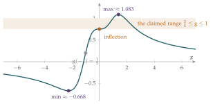

Criticise each step of the following arguments. You should correct the arguments where necessary and possible, and say (with justification) whether you think the conclusions are true even though the argument is incorrect.
The function \(\mathrm{g}\) defined by \[\mathrm{g}(x) = \frac{2x^3 + 3}{x^4 + 4}\] satisfies \(\mathrm{g}'(x) = 0\) only for \(x = 0\) or \(x = \pm1\). Hence the stationary values are given by \(x = 0\), \(\mathrm{g}(x) = \frac34\) and \(x = \pm1\), \(\mathrm{g}(x) = 1\). Since \(\frac34 < 1\), there is a minimum at \(x = 0\) and maxima at \(x = \pm1\). Thus we must have \(\frac34 \leq \mathrm{g}(x) \leq 1\) for all \(x\).
\(\displaystyle\int (1-x)^{-3}\,\mathrm{d}x = -3(1-x)^{-4}\) and so \(\displaystyle\int_{-1}^{3} (1-x)^{-3}\,\mathrm{d}x = 0\).
The hook
Most exam questions ask you to produce an argument. This one hands you two arguments and asks you to take them apart. That is a very different skill, and it is the one you will use most at university: checking your own work, reading a proof in a book and deciding whether you believe it, marking a friend’s attempt, refereeing a paper.
The arguments here are bad in an instructive way. Every step looks like something you have seen a hundred times. Some steps contain arithmetic slips, but the more serious errors are errors of logic: conclusions that do not follow even when the calculations are right. Those are the errors that survive into professional mathematics, and spotting them is what this chapter is about.
Before you start
When you are asked to “criticise each step”, what should you check at each step? Make a list before you start.
A good checklist has at least three questions. Is the calculation correct? Does this step follow from the previous ones? Are there hidden assumptions (that a function is continuous, that a limit exists, that a stationary point must be a maximum or minimum)? The question also asks whether the conclusions might be true anyway. A wrong argument can have a true conclusion, so that needs a separate check.
Working it through
Stage 1 Is the derivative right?
Differentiate \(\mathrm{g}\) with the quotient rule. Where is \(\mathrm{g}'(x) = 0\)? Check \(x = 1\) and \(x = -1\) directly.
By the quotient rule, \[\mathrm{g}'(x) = \frac{6x^2(x^4 + 4) - (2x^3 + 3)\cdot 4x^3}{(x^4 + 4)^2} = \frac{-2x^6 - 12x^3 + 24x^2}{(x^4 + 4)^2} = \frac{-2x^2\bigl(x^4 + 6x - 12\bigr)}{(x^4 + 4)^2}.\] So \(\mathrm{g}'(x) = 0\) when \(x = 0\) or \(x^4 + 6x - 12 = 0\). At \(x = 1\), \(x^4 + 6x - 12 = -5\); at \(x = -1\) it is \(-17\). Neither is a stationary point. The first claim is false.
The quartic \(x^4 + 6x - 12\) is \(-12\) at \(x = 0\) and tends to \(+\infty\) in both directions, so it has (at least) one positive root and one negative root; it has exactly two real roots, because its second derivative \(12x^2\) is non-negative, so it is convex and can cross zero at most twice. Numerically they are \(x \approx 1.386\) and \(x \approx -2.247\).
Stage 2 Are the values right?
\(\mathrm{g}(0) = \frac34\) is correct, and \(\mathrm{g}(1) = \frac{5}{5} = 1\). But \(\mathrm{g}(-1) = \frac{-2 + 3}{1 + 4} = \frac15\), not \(1\). Even on its own terms, the argument has an arithmetic error: it seems to have assumed that \(\mathrm{g}\) is even.
Stage 3 Does comparing values tell you which is a maximum?
Suppose a function has exactly two stationary points, with values \(\frac34\) and \(1\). Does it follow that the first is a minimum and the second a maximum?
No. The nature of a stationary point is a local property: it depends on how the function behaves near that point, not on how its value compares with the value somewhere else. A function can have a local maximum lower than a local minimum (think of \(x + 2\sin x\)), or a stationary point that is neither. Here, near \(x = 0\), the factor \(x^4 + 6x - 12\) is close to \(-12\), so \[\mathrm{g}'(x) = \frac{-2x^2(x^4 + 6x - 12)}{(x^4 + 4)^2} > 0 \qquad\text{for small } x \neq 0.\] The derivative is positive on both sides of \(0\): \(x = 0\) is a stationary point of inflection, not a minimum.
Stage 4 Do stationary values bound a function?
Even with correct stationary points, why can’t you conclude that every value of \(\mathrm{g}\) lies between the smallest and largest stationary values? Find a value of \(x\) with \(\mathrm{g}(x) < \frac34\).
Stationary points only describe local behaviour. The global behaviour also depends on what happens at the ends of the domain, here as \(x \to \pm\infty\). Since \(\mathrm{g}(x) \to 0\) as \(x \to \pm\infty\), and \(\mathrm{g}(x) < 0\) whenever \(2x^3 + 3 < 0\), that is, \(x < -\sqrt[3]{3/2} \approx -1.14\), the function takes negative values. For example \(\mathrm{g}(-2) = \frac{-13}{20}\). So the conclusion \(\frac34 \leq \mathrm{g}(x) \leq 1\) is false (Figure 3.1.1).
The correct statement: \(\mathrm{g}\) increases to a global maximum of about \(1.083\) at \(x \approx 1.386\), then decreases towards \(0\); to the left, it decreases from \(0\) to a global minimum of about \(-0.668\) at \(x \approx -2.247\), then increases through \(x = 0\) (where it has a horizontal inflection) up to the maximum. So \(-0.668 \lesssim \mathrm{g}(x) \lesssim 1.083\) for all \(x\).

Stage 5 The integral
Differentiate \(-3(1-x)^{-4}\). Do you get \((1-x)^{-3}\)?
\(\dfrac{\mathrm{d}}{\mathrm{d}x}\bigl[-3(1-x)^{-4}\bigr] = -3 \cdot (-4)(1-x)^{-5} \cdot (-1) = -12(1-x)^{-5}\). Wrong in both the power and the coefficient. The correct antiderivative is \[\int (1-x)^{-3}\,\mathrm{d}x = \tfrac12(1-x)^{-2} + C,\] as you can check by differentiating.
With the correct antiderivative, \(\bigl[\frac12(1-x)^{-2}\bigr]_{-1}^{3} = \frac12 \cdot \frac14 - \frac12 \cdot \frac14 = 0\). So the answer was right after all. Or was it?
It was not. The fundamental theorem of calculus, \(\int_a^b F'(x)\,\mathrm{d}x = F(b) - F(a)\), requires the integrand to be continuous on the whole interval \([a, b]\). Here \((1-x)^{-3}\) is undefined at \(x = 1\), which lies inside \([-1, 3]\), and near \(x = 1\) it is enormous. The integral must be treated as an improper integral, split at the bad point: \[\int_{-1}^{1} (1-x)^{-3}\,\mathrm{d}x = \lim_{\varepsilon \to 0^+} \Bigl[\tfrac12(1-x)^{-2}\Bigr]_{-1}^{1-\varepsilon} = \lim_{\varepsilon \to 0^+} \left( \frac{1}{2\varepsilon^2} - \frac18 \right) = +\infty.\] The integral from \(-1\) to \(1\) is infinite (and the one from \(1\) to \(3\) is \(-\infty\)), so \(\int_{-1}^{3}(1-x)^{-3}\,\mathrm{d}x\) does not exist. The conclusion “\(= 0\)” is false, not because the true value is something else, but because there is no value.■
Looking back
Three kinds of error. Calculation errors (the derivative, \(\mathrm{g}(-1)\), the antiderivative), logical errors (comparing values to classify stationary points; stationary values as global bounds), and hidden assumptions (continuity in the fundamental theorem of calculus).
Right answer, wrong reason. Correcting the antiderivative in part (ii) reproduces the answer \(0\), but the argument is still invalid. A correct-looking answer is no evidence that the reasoning is sound.
Local versus global. Derivatives tell you about the behaviour near a point. Global conclusions need more: what happens at the ends of the domain, or at points where the function misbehaves.
What’s really going on
Errors of exactly this kind were made by the founders of analysis. In his Cours d’analyse of 1821, Augustin-Louis Cauchy “proved” that a convergent sum of continuous functions is always continuous. In 1826 Niels Henrik Abel pointed out a counterexample: the Fourier series \[\sin x - \tfrac12\sin 2x + \tfrac13\sin 3x - \cdots\] converges for every \(x\), and every term is continuous, but the sum jumps at \(x = \pm\pi\) (it equals \(x/2\) for \(-\pi < x < \pi\)). Working out exactly what had gone wrong in Cauchy’s argument took decades, and led to the concept of uniform convergence, which every analysis student now learns. Hidden assumptions, often about swapping the order of two limits, are the most common source of error in all of analysis.
Theorems with hypotheses
Two of the errors in this question come from ignoring the hypotheses of a theorem.
The extreme value theorem says that a continuous function on a closed, bounded interval \([a, b]\) attains a maximum and a minimum, and they occur either at stationary points or at the endpoints. On the whole real line there are no endpoints to check, and the function might not have a maximum at all; you must examine the behaviour as \(x \to \pm\infty\) instead.
The fundamental theorem of calculus needs the integrand to be continuous on \([a, b]\). If it is not, the integral may still exist (try \(\int_0^1 x^{-1/2}\,\mathrm{d}x\)) or may not (as here), and you must check using limits.
At university, every theorem you meet will come with a precise list of hypotheses. Part of the training is to check them, every time, before using the theorem.
A value for a divergent integral
There is a curious footnote to part (ii). The interval \([-1, 3]\) is symmetric about the bad point \(x = 1\), and \((1-x)^{-3}\) is “odd” about that point. If you cut out a symmetric gap \((1 - \varepsilon, 1 + \varepsilon)\) and let \(\varepsilon \to 0\), the two infinite pieces cancel and you do get \(0\). This is called the Cauchy principal value, and it is genuinely useful in physics and complex analysis. But it is a different definition, chosen deliberately, and an argument that arrives at it by accident has not proved anything.
The thinking skill
Check every step for three things: is the calculation right, does the step follow logically, and what has been assumed without being said?
Then check the conclusion separately: an incorrect argument can have a true conclusion, and a “correct” answer can come from an invalid argument. Apply the same scrutiny to your own work; the arguments you are most likely to believe are your own.
Try this next
A substitution that lies. (From STEP I, 1987.) Explain why the substitution \(x = 1/t\) does not show that \[\int_{-1}^{1} \frac{\mathrm{d}x}{(1+x^2)^2} \quad\text{and}\quad \int_{-1}^{1} \frac{-t^2}{(1+t^2)^2}\,\mathrm{d}t\] are equal. Evaluate both integrals correctly. (One is positive and one is negative, so they certainly differ.)
True or false? (From STEP I, 1998.) Justify your answers.
\(a^{\ln b} = b^{\ln a}\) for all \(a, b > 0\).
\(\cos(\sin\theta) = \sin(\cos\theta)\) for all real \(\theta\).
There is a polynomial \(\mathrm{P}\) such that \(|\mathrm{P}(\theta) - \cos\theta| \leq 10^{-6}\) for all real \(\theta\).
\(x^4 + 3 + x^{-4} \geq 5\) for all \(x > 0\).
All horses are the same colour. Find the flaw in this “proof” by induction: any one horse is the same colour as itself; given \(n + 1\) horses, the first \(n\) are the same colour by the inductive hypothesis, and so are the last \(n\); the two groups overlap, so all \(n + 1\) are the same colour.
An integral that does exist. Show that \(\int_{-1}^{1} |x|^{-1/2}\,\mathrm{d}x\) exists, although the integrand is undefined at \(0\), and find its value.
Further reading
E. A. Maxwell, Fallacies in Mathematics (Cambridge University Press). A classic collection of plausible wrong arguments, organised by topic, written for sixth-formers.
Bernard Gelbaum & John Olmsted, Counterexamples in Analysis (Dover). Hundreds of examples showing why the hypotheses of theorems matter. Dip in once you have started an analysis course.
Imre Lakatos, Proofs and Refutations (Cambridge University Press). A brilliant dialogue about how mathematicians find, and fix, errors in proofs.